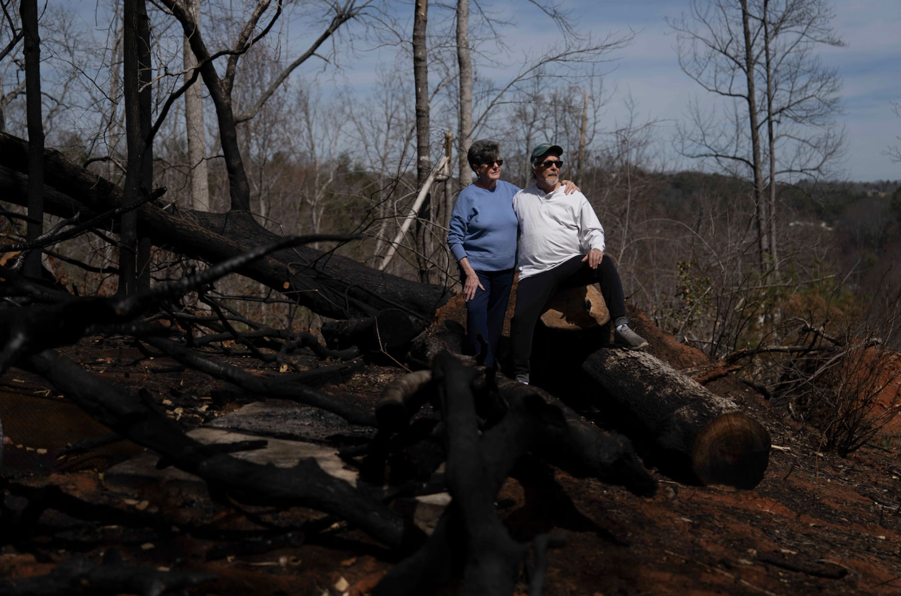

‘We need to start burning’
The afternoon Black Cove Fire sparked on March 19; more than 75 blazes had sprung up across the
state on an especially dry and windy spring day.
Cheek, sporting fire-resistant clothes, a worn baseball cap and a curly beard grown to his
chest, finally made it up to the ridge where eight firefighters gazed at the growing plume of
smoke in the distance. Huge trees felled by Hurricane Helene, the remnants of which blew through
here in late September, blocked pathways in the forest.
Residents prepared to evacuate. Joseph Russell, 25, said he had never seen a fire so close
before, and he packed all the things he said he couldn’t replace: old photos, clothes, his pet
snake and his grandfather’s guns.
A bulldozer worked to dig a protective path around houses on the hill. A helicopter flew
overhead dousing the flames with water from a thin hose dangling from its belly, but it was too
smoky for aircraft to get very low.
Crew leaders leaned against the bed of Cheek’s truck and pored over a map of the terrain. The
goal, they decided, would be to fight the fire with fire. They had set the forest on the top of
the hill ablaze, in hopes that the already-charred ground would slow the wildfire’s hungry path
toward any homes in the area.
At 6:24 p.m., they had mapped out their first line.
“We need to start burning,” Cheek said.
The crew doused the perimeter with fuel and lit it.
It has already been a vicious fire season in North Carolina this year, according to the NIFC,
with more than 2,700 blazes and more than 11,900 acres burned as of March 24.
Bobby Arledge, who for the past dozen years has been the fire marshal in Polk County, south of
Asheville, has seen firsthand the risks posed by conditions in the Southeast. Earlier this
month, firefighters spent days combating a blaze that grew rapidly to 600 acres along U.S. Route
176, not far from the town of Saluda.
Arledge, who said he has worked in the county since 1994, is used to the low humidity and high
winds that this season often brings. But in the wake of Helene, he said, “I’ve never seen this
much debris down.”
And it is likely to linger for years, he added, in part because so much of it is on private
property. That means the heightened risk for fiercer and more frequent wildfires in the area
will loom for a long time to come.
“It’s just the challenge we face.”

Tim and Susan Hardy outside their home, where a fire burned through their backyard, charring
trees felled by Hurricane Helene last year. (Allison Joyce/For The Washington Post)
For North Carolinians who lived through an epic storm last fall, the heightened threat of
wildfire is a devastating development.
Tim and Susan Hardy bought their Old Fort home, east of Asheville, 17 years ago but never
experienced fires until January, when one tore through their backyard, devouring their beloved
blueberry and azalea bushes and charring the massive oaks that Helene’s strong winds felled in
September.
“It used to be a sanctuary here,” Susan said, gazing at the blackened branches and gully of
downed trees as her 7-year-old goldendoodle Ruby trotted by her side. “Gardening was kind of my
thing. That’s been the hardest part.”
When the fire broke out and the couple had to evacuate, officials said they couldn’t promise the
house would be spared. Tim thought of his instruments. Once an aspiring rock star, he has
collected some 50 guitars that hang all through their house. He has a tremor that makes it hard
to carry a cup of coffee to the couch without spilling — but when he plays, he’s steady.
“It made me have more empathy for places that have fires a lot, like California,” he said.
But in these residential areas, fires could become more and more of a reality. An October
assessment by the North Carolina Forest Service estimated that 822,000 acres of timberland
suffered some sort of damage during the storm, with more than three-quarters of that on private
land. In neighboring Tennessee, Helene’s wrath was not as extensive, but even so the state’s
forestry division found that more than 139,000 acres of forest land had been lost to the storm.
The timber could provide more than a decade of ground fuel for fires as it continues to dry out,
say foresters. Helene toppled oak trees before they had shed their leaves for winter, said Adam
Warwick, a fire manager at the North Carolina chapter of the Nature Conservancy, a nonprofit
organization working on restoration across the region. Now those dead leaves on the ground, when
ignited, create large blazes that can make the fires more intense. The oak itself could take a
long time to completely dry out, providing fuel for many years to come.
The regional problem isn’t limited to Helene’s wake.
Ludie Bond, a public information officer for the Florida Forest Service, said that two other
hurricanes last year, Debby and Milton, also blew down a lot of heavy timber in the South.
Earlier this month, a wildfire broke out in Miami-Dade County, burning more than 26,000 acres.
The Hardys have thought about leaving Old Fort after so many months of extreme weather. “We’ve
shopped around,” said Tim. “But we can’t find any place that would be better.”
Fighting fire with fire
One way conservationists and foresters are trying to reduce these risks is through prescribed
burning, a practice of lighting a forest fire under safe conditions to prevent more
out-of-control burns in the future.
For decades, forest managers have suppressed fires, leaving more fuel on the ground.
“The South is the exception,” Warwick said. “The culture of prescribed burning has continued.”
But the same factors driving wildfires make it harder to sustain this approach.
On a cloudless Tuesday morning, members of the North Carolina Forest Service and the Nature
Conservancy gathered in an empty field in DuPont State Forest, which boasts more than 10,000
acres, many waterfalls, and attracts some 1.2 million visitors each year.
Burn boss Mike Santucci briefed the crew on conditions, including humidity, wind and the
landslides and debris from Helene that they had have to navigate around.
“If people pass through and have questions, talk to them, educate them about good fire and bad
fire,” Santucci urged.
Warwick’s team at the Nature Conservancy helps state foresters, struggling with staff shortages,
carry out burns about 50 times a year. They travel across state lines, into Tennessee and South
Carolina. It’s grueling work that pays between $18 and $25 an hour — most workers hold other
jobs.
Jenifer Mallinoff, a Maryland native who moved to the area four years ago, led her second burn
ever for the group in DuPont. Her voice was calm and precise as she instructed her team to dip
red cans full of fuel onto the dried underbrush and start the flames. Soon the crackling of
kindling echoed through the forest. Huge plumes of smoke rose into the air.
“I just love being out in the woods,” Mallinoff said as gentle winds swirled ash around her.
For most of the workers, fire and nature go hand in hand. Warwick delighted in the burning
surroundings, pointing out salamander habitats, woodpeckers and rare plants. These activities
clear space for new plants that thrive in direct sunlight to emerge, he said. But he added that
their work is growing more difficult as more people move closer to the forests, since they can
complain.
“The biggest hurdle for burning is the smoke,” said Warwick.
That same week, Cheek — who helped start the prescribed burn program in DuPont a decade and a
half ago — was focused on the wildfire now underway, walking along the ridge as residents packed
their bags in case they needed to evacuate.
The sunset, visible from wooden decks attached to rural cabins, turned the Blue Ridge Mountains
pink and sent orange streaks through the sky.
“Everywhere I go, I’d rather be here. Even with this destruction.”
-Michael Cheek
North Carolina Forest Service’s mountain division director
He got back in his truck. His walkie-talkie crackled again: “There’s a large brush fire coming
up the mountain towards the Blue Ridge Parkway.”
“Oh joy,” said Cheek. “It could be a long night.”
This story has been reproduced as a part of coursework for the Philip Merrill College of
Journalism at the University of Maryland, College Park. It was originally published by
The Washington Post.